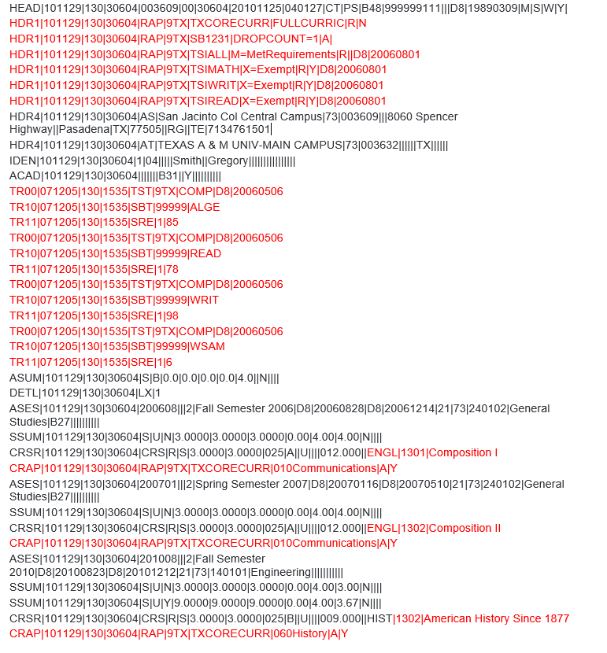

EDI College Transcript Format
Required format for EDI College Transcript
The incoming college transcript is received in a format that requires EDI.Smart processing before TCC Student processing.
After EDI.Smart processing, which uses the TS transaction set, the following format is expected and ready for TCC Student processing. Records highlighted with red are relevant for this EDI transcripts.
